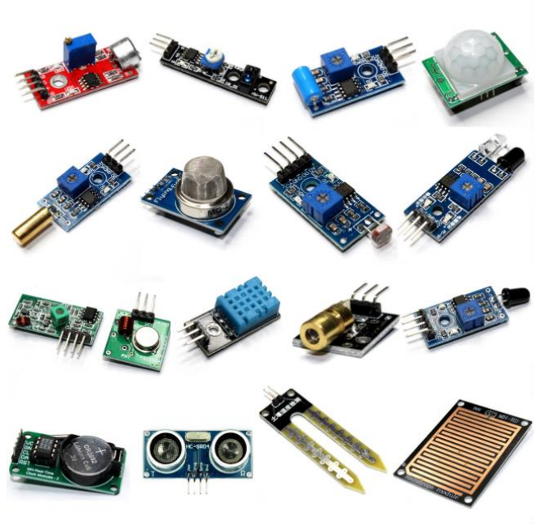
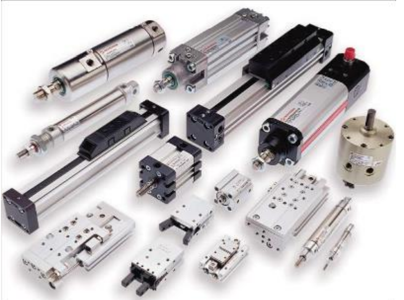

Los sensores son dispositivos que tienen la capacidad de detectar y medir fenómenos físicos o químicos presentes en el entorno. Su función es captar esta información y convertirla en una señal que pueda ser interpretada y analizada, ya sea por un operador humano o por otro dispositivo electrónico. Existe una amplia variedad de sensores diseñados para medir diferentes tipos de variables, dependiendo de la aplicación específica en la que se utilicen.
Algunos de los sensores más comunes son los sensores de temperatura, como los termopares y los termistores, que miden los cambios de temperatura a través de variaciones en el voltaje o la resistencia eléctrica, respectivamente. También encontramos los sensores de presión, que pueden ser piezoeléctricos o de silicio, y se utilizan para medir la presión de un fluido o gas.
En cuanto a los sensores de luz, los fotodiodos y los fototransistores son capaces de convertir la luz en corriente eléctrica, lo que los hace útiles en aplicaciones como los sistemas de iluminación automáticos. Por otro lado, los sensores de proximidad, como los infrarrojos y los ultrasónicos, se emplean para detectar la presencia y la distancia de objetos cercanos.
Además, existen sensores de movimiento, como los sensores infrarrojos pasivos (PIR) y los sensores de microondas, que se utilizan en sistemas de seguridad y en iluminación automática para detectar el movimiento de objetos o personas. Otro tipo de sensor común son los sensores de humedad, que pueden ser resistivos o capacitivos, y se utilizan en sistemas de control climático para medir la humedad relativa del aire.
Estos son solo algunos ejemplos de los numerosos tipos de sensores disponibles, cada uno diseñado para medir variables específicas y adaptado a diversas aplicaciones en diferentes industrias y entornos.
Los actuadores son dispositivos que tienen la capacidad de convertir una señal de control en movimiento físico o acción. Son componentes esenciales en sistemas automatizados y se utilizan en una amplia variedad de aplicaciones para controlar y manipular dispositivos mecánicos, eléctricos o hidráulicos. Existen diversos tipos de actuadores, cada uno diseñado para cumplir funciones específicas.
Uno de los tipos más comunes son los actuadores eléctricos, como los motores eléctricos que convierten energía eléctrica en movimiento mecánico rotativo, y los solenoides, que utilizan un campo magnético generado por una corriente eléctrica para producir un movimiento lineal.
Otro tipo son los actuadores hidráulicos, como los cilindros hidráulicos que generan movimiento lineal mediante un fluido hidráulico, y los motores hidráulicos que convierten la energía hidráulica en movimiento rotativo.
Los actuadores neumáticos también son ampliamente utilizados. Estos incluyen los cilindros neumáticos, que usan aire comprimido para generar movimiento lineal, y los motores neumáticos, que convierten la energía neumática en movimiento rotativo.
Además, existen actuadores piezoeléctricos, que cambian de forma cuando se les aplica un voltaje eléctrico, y actuadores térmicos, como los actuadores de forma de memoria que responden a cambios de temperatura y los actuadores térmicos bimetálicos que se doblan o flexionan cuando se calientan.
Otros tipos de actuadores son los magnéticos, como los electroimanes que generan un campo magnético cuando se les aplica corriente eléctrica, y los actuadores magnetostrictivos que cambian de forma en respuesta a un campo magnético.
Estos son solo algunos ejemplos de los diversos tipos de actuadores disponibles, cada uno diseñado para aplicaciones específicas que requieren diferentes tipos de movimiento o acción controlada.
